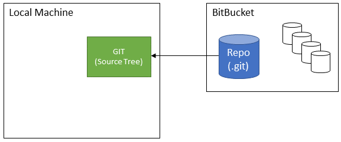
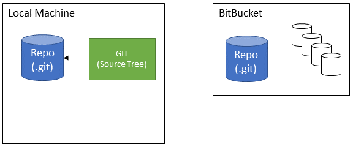
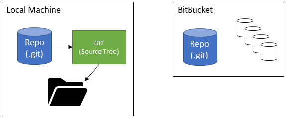

Assumptions
- New to Git
- Coming from TFS
- Your Repository is Already in BitBucket
GUI for Git
https://www.sourcetreeapp.com
Get the Source Code
Clone the Repository
Repository == Source Control for a Single Project
"repo" for short



Branching
First Class Feature
Branches are NOT folders!
They only exists in the repository.
Branching Strategy
Branches on BitBucket
origin/[branch names]
[Demo - Switching Branches]
TFS => Pessimistic Locking
Git => No Locking
Commit => Local Repo Only
Feature Branch
Smallest unit of "deployable" functionality.
Feature Branch Name
feature/[something]
[Demo - Committing a Change]
Did not Cover
- Merging
- Pull Request
- Code Review
Software Engineering Standards
- Git with BitBucket
- Branching Strategy = GitFlow *
Git's Flexibility == Higher Learning Curve